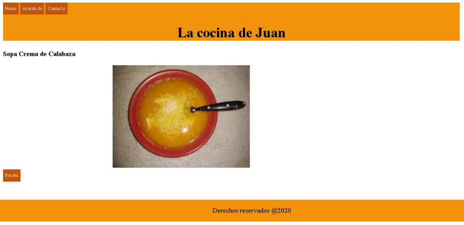

⇦Volver al Índice
Versión 1-html
Version 2-html-css
Version 3
La Cocina de Juan-Ejercicio
Este es el ejercicio propuesto en la plataforma de codo a codo para
ir añadiendo los elementos vistos durante el aprendizaje.
El index

Acerca de
Contacto
Receta de la Sopa "Crema de Calabaza"